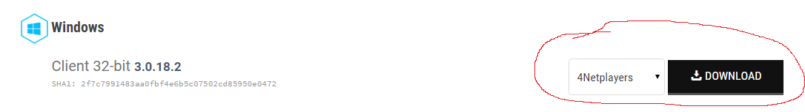
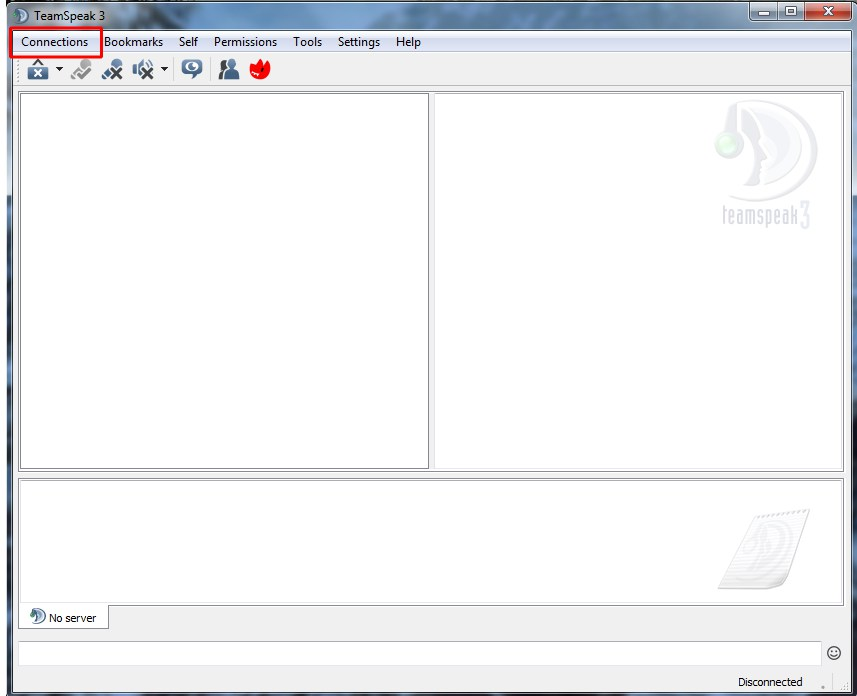
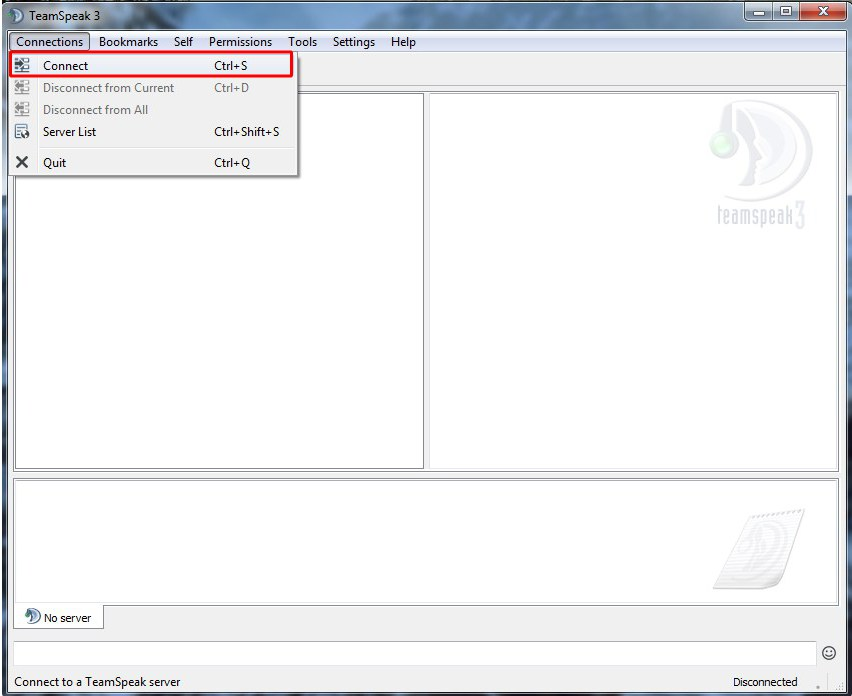
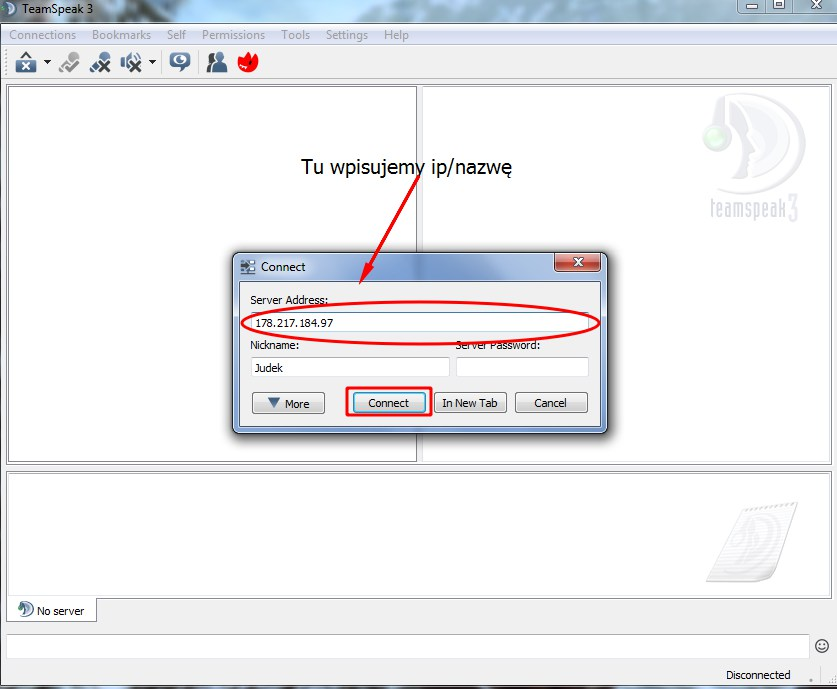

Co to i do czego?
TeamSpeak to program służący do komunikacji grupowej, głównie głosowej. Jest kompletnie darmowy i stosowany przez miliony osób na świecie.
Gdzie pobrać i jak zainstalować?
TeamSpeak to program służący do komunikacji grupowej, głównie głosowej. Jest kompletnie darmowy i stosowany przez miliony osób na świecie. Aby zainstalować: 1. Wchodzimy na tą stronę.  2. Naciskamy na czarny przycisk DOWNLOAD znajdujacy sie na prawo od napisu Client 32-bit. 3. Powinno zacząć się pobieraniu, po pobraniu odpalamy instalkę. Aby zainstalować, postępujemy według poniższych kroków: 4. Naciskamy przycisk Next 5. Przewijamy paskiem na sam dół 6. Zaznaczamy ten kwadracik przy I accept the terms of the license Agreement 7. Naciskamy przycisk Next 8. Naciskamy przycisk Next 9. Naciskamy przycisk Next 10. Naciskamy przycisk Next 11. Odznaczamy kwadracik przy Install overwolf 12. Naciskamy przycisk Next 13. Naciskamy przycisk Next 14. Naciskamy przycisk Finish Aby połączyć się do serwera: 1. Odpalamy TeamSpeak 3 2. Naciskamy na przycisk Connections w lewym górnym rogu okienka 3. Naciskamy na Connect 4. W okienku Server Address wpisujemy adres do serwera ts3, w tym przypadku ts3.maciej01.tech 5. W okienku Nickname wpisujemy swój pseudonim. Może to być np. swoje imię. 6. Naciskamy przycisk Connect. Powinniśmy zostać w tym momencie podłączeni. Jak używać po podłączeniu? Serwer TeamSpeak dzieli się na kanały, każdy z nich ma swój własny czat głosowy. Aby wejść na dany kanał, należy na niego nacisnąć podwójnie myszką. Po wejściu na kanał, możemy na nim mówić oraz pisać. Na górze znajduje się kilka ikonek. Najprzydatniejsze jednak są dwie - ikonka mikrofonu z czerwonym X oraz ikonka słuchawek z czerwonym X. Ta pierwsza po naciśnięciu wyłącza tymczasowo mikrofon i sprawia że inni nie słyszą twojej mowy, ta drugia wyłącza tymczasowo mowę innych, sprawiając że nikogo innego nie słyszysz. 